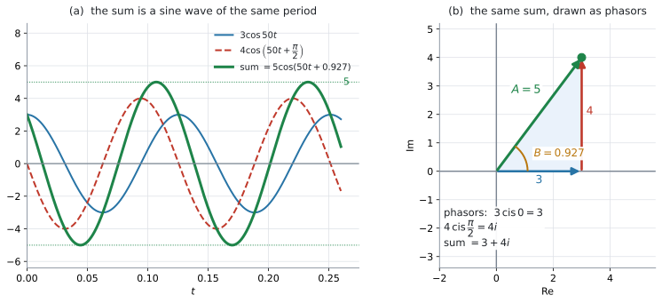
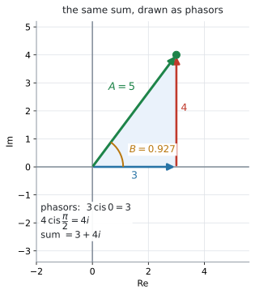
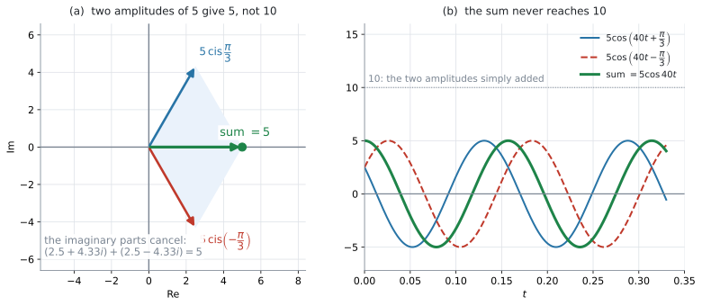

AHL 1.13b — Adding sinusoidal functions（正弦波の合成）
- 同じ frequency（周波数）の正弦波を足すと、また同じ frequency の正弦波になる（打ち消し合うときは \(0\) になる）と言える。
- 各項を phasor（複素数の矢印）\(A\operatorname{cis}\phi\) に直して、足せる。
- 足した複素数の modulus が新しい振幅、argument が新しい phase shift だと読める。
- 答えを \(A\cos(\omega t + B)\) の形で書ける。
- \(\sin\) と \(\cos\) が混ざっているとき、形をそろえてから足せる。
- 振幅は単純な和にならない理由を、図で説明できる。
AHL 1.13 の Content 欄は \(6\) 行あり、AHL 1.13a とこのページで分けて扱っています。このページに関わるのは、次の \(1\) 行です。
Adding sinusoidal functions with the same frequencies but different phase shift angles.
Guidance 欄には、こう書かれています。
Phase shift and voltage in circuits as complex quantities.
Example: Two AC voltage sources are connected in a circuit. If \(V_1 = 10\cos(40t)\) and \(V_2 = 20\cos(40t+10)\) find an expression for the total voltage in the form \(V = A\cos(40t+B)\).
この Example が、IB がこの項目について示している唯一の具体例です。phase が \(10\) radian と大きく、答えの \(B\) は第 \(3\) 象限に来ます。似た形を演習 2 に置いてあります。
「as complex quantities」——複素数として扱いなさい、と指定されています。このページの手順は、この指示に沿ったものです。
polar form と exponential form そのものは、AHL 1.13a で扱いました。
The idea
exponential form \(re^{i\theta}\) は、応用数学でとくによく使われます。理由は \(3\) つあります。
- 指数関数と三角関数をつなぐ（AHL 1.13a）
- ふつうの指数法則がそのまま使える（\(e^{A}e^{B} = e^{A+B}\)）
- 必要に応じて、real part だけ、あるいは imaginary part だけを取り出せる
この項目で扱うのは、frequency（周波数）が同じで phase（位相）が違う三角関数の和です。
たとえば \(\sin\left(3t - \dfrac{\pi}{3}\right)\) と \(\sin\left(3t + \dfrac{\pi}{6}\right)\) は、\(3t\) の部分が同じなので周期が同じ——つまり frequency が同じです。しかし山の来る時刻がずれているので、phase は違います。
\(3\) つ目の理由（real part だけを取り出せる）が、この項目の土台になります。\(\cos\) の波は \(e^{i\theta}\) の real part だからです（Why it works）。
1. 同じ周期の波を足すと、同じ周期の波か、\(0\) になります
\[ 3\cos 50t \quad \text{と} \quad 4\cos\left(50t + \frac{\pi}{2}\right) \]
を足してみます。どちらも \(50t\) の部分が同じ、つまり frequency が同じです。

図 1 の緑の線が、\(2\) つを足したものです。でこぼこにはならず、同じ周期の正弦波のままです。変わったのは \(2\) つだけです。
- amplitude（振幅）が \(3\) でも \(4\) でもなく \(5\) になった
- 波全体が横にずれた（phase shift）
つまり、答えは次の形に書けます。
\[ A_1\cos(\omega t + \phi_1) + A_2\cos(\omega t + \phi_2) = A\cos(\omega t + B) \tag{1}\]
この項目で習うのは、\(A\) と \(B\) の求め方です。\(\omega\) は変わりません。
ただし、\(2\) つがちょうど打ち消し合うときだけは別です。そのときは和がいつも \(0\) になり、\(A = 0\) です。このとき \(0\cos(\omega t + B)\) はどの \(B\) でも同じ \(0\) になるので、\(B\) が \(1\) つに決まりません。 式 1 の右辺は、ふつう \(A > 0\) として求められるものなので、その形では表せません。 答えは \(0\) とします（演習 \(6\)・演習 \(9\)）。
2. なぜ複素数を使うのか
\(\cos(\omega t + \phi)\) を展開して整理する、という道もあります。しかし、それには compound angle formula（加法定理）\(\cos(X+Y) = \cos X\cos Y - \sin X\sin Y\) が要ります。
AI HL のシラバスに、加法定理はありません。 公式集の \(3.8\) の欄に印刷されている identity も
\[ \cos^{2}\theta + \sin^{2}\theta = 1, \qquad \tan\theta = \frac{\sin\theta}{\cos\theta} \]
の \(2\) つだけです。ですから、その道は通れません。
かわりに使うのが複素数です。シラバスが Guidance 欄で as complex quantities と書いているのは、このことです。
3. phasor とは
\(A\cos(\omega t + \phi)\) という \(1\) つの波に、複素数 \(A\operatorname{cis}\phi\) を対応させます。この複素数を phasor（フェーザ）といいます。
\[ A\cos(\omega t + \phi) \quad \longleftrightarrow \quad A\operatorname{cis}\phi = A e^{i\phi} \tag{2}\]
\(\omega t\) は phasor に入れません。 \(2\) つの波で \(\omega\) が同じだからこそ、共通部分として外に置いておけます（理由は Why it works）。

図 2 が、\(3\cos 50t\) と \(4\cos\left(50t+\dfrac{\pi}{2}\right)\) の phasor です。\(3\) の矢印の先から \(4i\) の矢印をつないで描いてあります。
\[ 3\operatorname{cis}0 = 3, \qquad 4\operatorname{cis}\frac{\pi}{2} = 4i \]
矢印をつないだ先が \(3+4i\) で、その modulus が \(5\)、argument が \(0.927\) です。これが 図 1 の緑の波の振幅と phase shift そのものです。
\(2\) 本とも原点から描いて平行四辺形にしても、同じ点に着きます（AHL 1.13a）。つないで描くほうが、和の矢印が見つけやすくなります。
この方法が働くのは、\(2\) つの \(\omega\) が同じときだけです。シラバスも with the same frequencies と断っています。
\(\cos 50t + \cos 30t\) のような和は、正弦波になりません。この項目の範囲外です。
4. 手順は \(4\) つです
- 各項を \(A\operatorname{cis}\phi\) にして、\(a+bi\) に直す
- 足す（real part どうし、imaginary part どうし）
- 足した複素数の modulus が \(A\)、argument が \(B\)
- \(A\cos(\omega t + B)\) と書く
\(3\) 番の argument は、象限を確かめてから決めてください（AHL 1.12b）。ここでも \(\arctan\) の値をそのまま使うと間違えます。
足した複素数が \(0\) になったときは、argument が決まりません。そのときは \(A = 0\)、つまり和が \(0\) です（第1節）。
上の例で通してみます。
\[ 3\operatorname{cis}0 = 3 + 0i, \qquad 4\operatorname{cis}\frac{\pi}{2} = 0 + 4i \]
\[ (3+0i)+(0+4i) = 3 + 4i \]
\[ A = \lvert 3+4i \rvert = \sqrt{9+16} = 5, \qquad B = \arctan\frac{4}{3} = 0.927 \]
\[ 3\cos 50t + 4\cos\left(50t+\frac{\pi}{2}\right) = 5\cos(50t + 0.927) \]
5. 振幅は、足し算ではありません
\(3\) と \(4\) を足した波の振幅は \(7\) ではなく \(5\) でした。なぜ小さくなるのかを、図で見ておきます。

図 3 の (a) は、振幅が同じ \(5\) で、phase が \(\dfrac{\pi}{3}\) と \(-\dfrac{\pi}{3}\) の \(2\) つです。
\[ 5\operatorname{cis}\frac{\pi}{3} = 2.5 + 4.33i, \qquad 5\operatorname{cis}\left(-\frac{\pi}{3}\right) = 2.5 - 4.33i \]
足すと imaginary part が打ち消し合って
\[ (2.5+4.33i) + (2.5-4.33i) = 5 \]
です。\(A = 5\)、\(B = 0\) になりました。(b) のグラフでも、緑の波は \(10\) に届いていません。
\(\phi_1 = \phi_2\) なら矢印が一直線に並ぶので、\(A = A_1 + A_2\) です。
向きが違えば、必ずそれより小さくなります。
\[ A \leq A_1 + A_2 \]
三角形の \(2\) 辺の和が残りの \(1\) 辺より長い——という、図形の性質そのものです（AHL 1.13a の平行四辺形）。
6. \(\sin\) と \(\cos\) が混ざっているとき
phasor を作る前に、形をそろえます。 そろえてしまえば、あとは同じ手順です。
\[ \sin\theta = \cos\left(\theta - \frac{\pi}{2}\right), \qquad \cos\theta = \sin\left(\theta + \frac{\pi}{2}\right) \tag{3}\]
たとえば \(4\sin 2t\) を \(\cos\) にそろえるなら \(4\cos\left(2t - \dfrac{\pi}{2}\right)\) で、phasor は \(4\operatorname{cis}\left(-\dfrac{\pi}{2}\right) = -4i\) です。
シラバスの AHL 3.8 の Guidance 欄には、こう書かれています。
Knowledge of exact values of \(\cos\theta\), \(\sin\theta\), and \(\tan\theta\) will not be assessed on examinations, but may aid student understanding of trigonometric functions.
\(\cos\dfrac{\pi}{3} = \dfrac{1}{2}\) のような値は、電卓で出して構いません。このページで exact の練習をするのは、答えが \(2\sqrt{3}\) のようにきれいになるとき、そのまま書いたほうが速く済むからです。
答えを \(A\sin(\omega t + B)\) の形で求めよ、と言われたら、全部 \(\sin\) にそろえるほうが速く終わります。phasor の考え方は同じです。
問題文が求めている形に、最初からそろえてください。 最後に直そうとすると、\(\dfrac{\pi}{2}\) の足し引きを間違えやすくなります。
7. \(B\) の読み方
\(B\) は、合成した波がもとの \(\cos\omega t\) から、角にしてどれだけずれたかを表します。これは phase（位相）であって、時間そのものではありません。
\(\omega > 0\) とすると、\(A\cos(\omega t + B) = A\cos\!\left(\omega\!\left(t + \dfrac{B}{\omega}\right)\right)\) なので、時間軸の上での符号付きの移動量は
\[ -\frac{B}{\omega} \ \text{秒} \tag{4}\]
です。ずれの大きさだけを言うなら \(\dfrac{\lvert B \rvert}{\omega}\) 秒です。
- \(B > 0\) … \(-\dfrac{B}{\omega} < 0\) なので左へ移動する（波が先に来る、leading）
- \(B < 0\) … \(-\dfrac{B}{\omega} > 0\) なので右へ移動する（波が遅れて来る、lagging）
たとえば \(B = 0.927\)、\(\omega = 50\) なら
\[ -\frac{0.927}{50} = -0.0185 \ \text{秒} \]
で、左へ \(0.0185\) 秒移動します。 山が来るのは \(t = 0\) ではなく \(t = -0.0185\) 秒です。\(0.927\) 秒ずれるのではありません。
Why it works
ここでは、なぜ \(\omega t\) を phasor から外してよいのかだけを説明します。
出発点は、AHL 1.13a の \(e^{i\theta} = \cos\theta + i\sin\theta\) です。この式の real part を取り出すと
\[ \cos\theta = \operatorname{Re}\left(e^{i\theta}\right) \]
です。ですから、\(1\) つの波は次のように書けます。
\[ A\cos(\omega t + \phi) = \operatorname{Re}\left(A e^{i(\omega t + \phi)}\right) = \operatorname{Re}\left(A e^{i\phi} \cdot e^{i\omega t}\right) \]
指数法則で \(e^{i(\omega t+\phi)}\) を \(2\) つに分けたところが要点です。\(A e^{i\phi}\) が phasor、\(e^{i\omega t}\) が共通部分になりました。
\(2\) つの波を足すと
\[ \operatorname{Re}\left(A_1 e^{i\phi_1}e^{i\omega t}\right) + \operatorname{Re}\left(A_2 e^{i\phi_2}e^{i\omega t}\right) = \operatorname{Re}\left(\left(A_1 e^{i\phi_1} + A_2 e^{i\phi_2}\right)e^{i\omega t}\right) \]
\(e^{i\omega t}\) が、そっくりくくり出せました。 \(\omega\) が同じでなければ、このくくり出しはできません。
あとはかっこの中の複素数を \(Ae^{iB}\) の形にまとめれば
\[ \operatorname{Re}\left(A e^{iB} e^{i\omega t}\right) = \operatorname{Re}\left(A e^{i(\omega t + B)}\right) = A\cos(\omega t + B) \]
となります。つまり phasor を足すという作業は、共通部分を外に置いたまま中身だけを足しているということです。
全部を \(\sin\) でそろえたときは、\(\sin\theta = \operatorname{Im}\left(e^{i\theta}\right)\) から出発して、同じ計算をたどります。\(\operatorname{Re}\) が \(\operatorname{Im}\) に変わるだけで、phasor が \(Ae^{i\phi}\) であることも、\(e^{i\omega t}\) をくくり出せることも同じです。大事なのは、\(2\) つの波を同じ \(\sin\)（または同じ \(\cos\)）にそろえてから phasor を作ることです。
Worked examples
問題文は英語です。意味が理解できなかったら、問題文の下の「日本語訳」を開いてください。解説は日本語です。
例題 1 Two voltages in a circuit are \(V_1 = 3\cos 50t\) and \(V_2 = 4\cos\left(50t + \dfrac{\pi}{2}\right)\), where \(V\) is in volts and \(t\) is in seconds.
Find the total voltage \(V_1 + V_2\) in the form \(A\cos(50t + B)\), where \(A > 0\) and \(B\) is in radians correct to \(3\) significant figures.
日本語訳
ある回路の \(2\) つの電圧が \(V_1 = 3\cos 50t\)、\(V_2 = 4\cos\left(50t+\dfrac{\pi}{2}\right)\) です。\(V\) の単位はボルト、\(t\) の単位は秒です。
合計の電圧 \(V_1 + V_2\) を \(A\cos(50t+B)\) の形で求めなさい。\(A > 0\) とし、\(B\) は radian で有効数字 \(3\) 桁で書きなさい。
第4節 の手順どおりに進めます。
手順 1。 各項を phasor にします。
\[ V_1 \ \longrightarrow \ 3\operatorname{cis}0 = 3 \]
\[ V_2 \ \longrightarrow \ 4\operatorname{cis}\frac{\pi}{2} = 4\left(\cos\frac{\pi}{2} + i\sin\frac{\pi}{2}\right) = 4i \]
手順 2。 足します。
\[ 3 + 4i \]
手順 3。 modulus と argument を読みます。点 \((3,\ 4)\) は第 \(1\) 象限なので、\(\arctan\) をそのまま使えます。
\[ A = \sqrt{3^{2}+4^{2}} = 5, \qquad B = \arctan\frac{4}{3} = 0.927 \]
手順 4。 形にして書きます。
\[ V_1 + V_2 = 5\cos(50t + 0.927) \]
検算。 \(t = 0\) を入れます。左辺は \(3\cos 0 + 4\cos\dfrac{\pi}{2} = 3 + 0 = 3\)、右辺は \(5\cos 0.927 = 5 \times 0.6 = 3\) ✓
\[V_1 \to 3\operatorname{cis}0 = 3, \qquad V_2 \to 4\operatorname{cis}\frac{\pi}{2} = 4i\] \[3 + 4i\] \[A = \sqrt{3^{2}+4^{2}} = 5, \qquad B = \arctan\frac{4}{3} = 0.927\] \[V_1 + V_2 = 5\cos(50t + 0.927)\]
例題 2 Let \(y_1 = 5\cos\left(40t + \dfrac{\pi}{3}\right)\) and \(y_2 = 5\cos\left(40t - \dfrac{\pi}{3}\right)\).
(a) Write \(y_1 + y_2\) in the form \(A\cos(40t + B)\).
(b) Comment on the amplitude of \(y_1 + y_2\) compared with the amplitudes of \(y_1\) and \(y_2\).
日本語訳
\(y_1 = 5\cos\left(40t+\dfrac{\pi}{3}\right)\)、\(y_2 = 5\cos\left(40t-\dfrac{\pi}{3}\right)\) とします。
(a) \(y_1 + y_2\) を \(A\cos(40t+B)\) の形で書きなさい。
(b) \(y_1+y_2\) の振幅を、\(y_1\) と \(y_2\) の振幅とくらべてコメントしなさい。
(a) phasor に直します。\(\cos\dfrac{\pi}{3} = \dfrac{1}{2}\)、\(\sin\dfrac{\pi}{3} = \dfrac{\sqrt{3}}{2}\) です。
\[ 5\operatorname{cis}\frac{\pi}{3} = \frac{5}{2} + \frac{5\sqrt{3}}{2}i, \qquad 5\operatorname{cis}\left(-\frac{\pi}{3}\right) = \frac{5}{2} - \frac{5\sqrt{3}}{2}i \]
足すと、imaginary part が打ち消し合います。
\[ \left(\frac{5}{2}+\frac{5}{2}\right) + \left(\frac{5\sqrt{3}}{2}-\frac{5\sqrt{3}}{2}\right)i = 5 \]
\(A = 5\)、\(B = \arg 5 = 0\) です（正の実軸上の点なので \(0\) です。AHL 1.12b）。
\[ y_1 + y_2 = 5\cos 40t \]
検算。 \(40t = 0\) のとき、左辺は \(5\cos\dfrac{\pi}{3}+5\cos\left(-\dfrac{\pi}{3}\right) = 2.5+2.5 = 5\)、右辺は \(5\cos 0 = 5\) ✓
(b) Comment on は、言葉で答える設問です。数値だけでは点になりません。
試験ではこう書く
The amplitude of the sum is \(5\), the same as each of \(y_1\) and \(y_2\), and much less than \(10\). The two phasors have equal length but point in different directions, \(\frac{\pi}{3}\) above and below the real axis, so their imaginary parts cancel and only part of each contributes to the total.
（和の振幅は \(5\) で、\(y_1\) と \(y_2\) のそれぞれと同じであり、\(10\) よりずっと小さい。\(2\) つの phasor は長さが等しいが向きが違い、実軸の上下 \(\dfrac{\pi}{3}\) を向いているので、虚部が打ち消し合い、それぞれの一部だけが合計に効いている、という意味です。）
(a) \[5\operatorname{cis}\frac{\pi}{3} + 5\operatorname{cis}\left(-\frac{\pi}{3}\right) = \left(\frac{5}{2}+\frac{5\sqrt{3}}{2}i\right)+\left(\frac{5}{2}-\frac{5\sqrt{3}}{2}i\right) = 5\] \[A = 5, \quad B = 0 \ \Rightarrow \ y_1 + y_2 = 5\cos 40t\]
(b) The amplitude of the sum is \(5\), not \(10\): the two phasors have equal length but different directions, so their imaginary parts cancel.
例題 3 Let \(y = 4\sin 2t + 3\cos 2t\).
Write \(y\) in the form \(A\sin(2t + B)\), where \(A > 0\) and \(B\) is in radians correct to \(3\) significant figures.
日本語訳
\(y = 4\sin 2t + 3\cos 2t\) とします。
\(y\) を \(A\sin(2t+B)\) の形で書きなさい。\(A > 0\) とし、\(B\) は radian で有効数字 \(3\) 桁で書きなさい。
答えが \(\sin\) の形なので、まず全部を \(\sin\) にそろえます（第6節）。
式 3 より \(\cos 2t = \sin\left(2t + \dfrac{\pi}{2}\right)\) です。
\[ y = 4\sin 2t + 3\sin\left(2t+\frac{\pi}{2}\right) \]
手順 1・2。 phasor にして足します。
\[ 4\operatorname{cis}0 + 3\operatorname{cis}\frac{\pi}{2} = 4 + 3i \]
手順 3。 点 \((4,\ 3)\) は第 \(1\) 象限です。
\[ A = \sqrt{16+9} = 5, \qquad B = \arctan\frac{3}{4} = 0.644 \]
手順 4。
\[ y = 5\sin(2t + 0.644) \]
検算。 \(t = 0\) を入れます。左辺は \(4\sin 0 + 3\cos 0 = 3\)、右辺は \(5\sin 0.644 = 5 \times 0.6 = 3\) ✓
\[3\cos 2t = 3\sin\left(2t+\frac{\pi}{2}\right)\] \[4\operatorname{cis}0 + 3\operatorname{cis}\frac{\pi}{2} = 4 + 3i\] \[A = \sqrt{4^{2}+3^{2}} = 5, \qquad B = \arctan\frac{3}{4} = 0.644\] \[y = 5\sin(2t + 0.644)\]
例題 4 Two vibrations act on the same point of a machine. Their displacements, in millimetres, are
\[ y_1 = 8\sin 3t \qquad \text{and} \qquad y_2 = 8\sin\left(3t + \frac{2\pi}{3}\right) \]
where \(t\) is in seconds.
(a) Write the combined displacement \(y_1 + y_2\) in the form \(A\sin(3t + B)\), giving exact values for \(A\) and \(B\).
(b) Interpret the value of \(A\) in the context of the machine.
日本語訳
\(2\) つの振動が、機械の同じ点にはたらいています。それぞれの変位はミリメートルで
\[ y_1 = 8\sin 3t \qquad \text{と} \qquad y_2 = 8\sin\left(3t + \frac{2\pi}{3}\right) \]
です。\(t\) の単位は秒です。
(a) 合わさった変位 \(y_1+y_2\) を \(A\sin(3t+B)\) の形で書きなさい。\(A\) と \(B\) は正確な値で書きなさい。
(b) \(A\) の値を、この機械の文脈で解釈しなさい。
(a) どちらも \(\sin\) なので、そろえる作業は要りません。
\[ 8\operatorname{cis}0 = 8 \]
\[ 8\operatorname{cis}\frac{2\pi}{3} = 8\left(-\frac{1}{2}\right) + 8\left(\frac{\sqrt{3}}{2}\right)i = -4 + 4\sqrt{3}\,i \]
足すと
\[ 8 + (-4 + 4\sqrt{3}\,i) = 4 + 4\sqrt{3}\,i \]
\[ A = \sqrt{4^{2}+(4\sqrt{3})^{2}} = \sqrt{16+48} = \sqrt{64} = 8 \]
点 \((4,\ 4\sqrt{3})\) は第 \(1\) 象限です。
\[ B = \arctan\frac{4\sqrt{3}}{4} = \arctan\sqrt{3} = \frac{\pi}{3} \]
\[ y_1 + y_2 = 8\sin\left(3t + \frac{\pi}{3}\right) \]
検算。 \(t = 0\) を入れます。左辺は \(0 + 8\sin\dfrac{2\pi}{3} = 8 \times \dfrac{\sqrt{3}}{2} = 4\sqrt{3}\)、右辺は \(8\sin\dfrac{\pi}{3} = 4\sqrt{3}\) ✓
(b) Interpret は、数値を文脈の言葉に直す設問です。単位を必ず付けてください。
試験ではこう書く
The combined vibration has amplitude \(8\) mm, so the point moves at most \(8\) mm from its rest position. This is the same as each single vibration and only half of \(16\) mm, because the two vibrations are \(\frac{2\pi}{3}\) out of phase and partly cancel each other.
（合わさった振動の振幅は \(8\) mm なので、この点は静止位置から最大 \(8\) mm しか動かない。これは \(1\) つの振動と同じで、\(16\) mm の半分でしかない。\(2\) つの振動の phase が \(\dfrac{2\pi}{3}\) ずれていて、たがいに一部を打ち消し合うからである、という意味です。）
(a) \[8\operatorname{cis}0 + 8\operatorname{cis}\frac{2\pi}{3} = 8 + \left(-4 + 4\sqrt{3}\,i\right) = 4 + 4\sqrt{3}\,i\] \[A = \sqrt{16+48} = 8, \qquad B = \arctan\sqrt{3} = \frac{\pi}{3}\] \[y_1 + y_2 = 8\sin\left(3t+\frac{\pi}{3}\right)\]
(b) The amplitude is \(8\) mm, so the point moves at most \(8\) mm from rest. The two vibrations are out of phase, so they partly cancel and the combined amplitude is \(8\) mm rather than \(16\) mm.
Common errors
\(3\cos 50t + 4\cos\left(50t+\dfrac{\pi}{2}\right)\) の振幅を \(7\) と書いてしまう誤りです。
振幅が足し算になるのは、\(2\) つの phase が同じときだけです（第5節）。向きが違えば、必ずそれより小さくなります。
正しくは \(\lvert 3+4i \rvert = 5\) です。phasor を足してから modulus をとる、という順番を守ってください。
\(3\cos 50t\) の phasor を \(3\operatorname{cis}50t\) と書いてしまう誤りです。
phasor に入るのは phase shift の \(\phi\) だけです（式 2）。\(\omega t\) は \(2\) つの波で共通なので、外に置いたままにします（Why it works）。
\(3\cos 50t\) は \(3\cos(50t + 0)\) なので、phasor は \(3\operatorname{cis}0 = 3\) です。
\(3\cos 2t\) と \(4\sin 2t\) の phasor を、どちらも \(\operatorname{cis}0\) として足してしまう誤りです。
\(\sin\) と \(\cos\) は、すでに \(\dfrac{\pi}{2}\) ずれています。先にどちらかにそろえてください（第6節）。
\[ \cos 2t = \sin\left(2t+\frac{\pi}{2}\right), \qquad \sin 2t = \cos\left(2t - \frac{\pi}{2}\right) \]
\(\arctan\) の値をそのまま \(B\) にしてしまう誤りです。
足した phasor が第 \(2\)・第 \(3\) 象限にあるときは、\(\pi\) を足すか引く必要があります（AHL 1.12b）。
足した複素数を図にかいてから、\(B\) を決めてください。
GDC が Angle: Degree のままだと、\(\arctan\dfrac{4}{3}\) が \(53.1\) と返ります。
HL の試験では radian が既定です。\(A\cos(50t+B)\) の \(50t\) は radian なので、\(B\) も radian でなければ足せません。
\(53.1\) と \(0.927\) が混ざった式は、意味を持ちません。
Using your GDC (TI-Nspire CX II)
1. 準備
doc → Settings → Document SettingsAngleをRadianにReal or ComplexをPolarに
Polar にしておくのが、この項目のこつです。理由は次の節にあります。
2. phasor を足すと、\(A\) と \(B\) が同時に出ます
Polar 設定のまま、phasor をそのまま足します。
\[ 3e^{0i} + 4e^{\frac{\pi}{2}i} \]
\(\pi\) も分数のテンプレートも、そのままの形で入ります。
\(5e^{0.927i}\) の形で返ります。\(A = 5\) と \(B = 0.927\) が、\(1\) 回の計算で両方読めます。
この打ち方が生きるのは、\(\operatorname{cis}\dfrac{2\pi}{3}\) のように \(a+bi\) へ直すのが面倒なときです。角が \(0\) や \(\dfrac{\pi}{2}\) だけなら、次の節のほうが速く済みます。
\(e\) は e^x キーから入れます。\(i\) は記号パレットからです（AHL 1.12a）。
Rectangular だと、\(3+4i\) が返ります
どちらの設定でも、計算しているものは同じです。Polar は modulus と argument を、Rectangular は real part と imaginary part を見せてくれる、という違いだけです（AHL 1.13a）。
非CAS の CX II は数値で計算するので、どちらの表示でも小数で返ります。
途中の足し算を確かめたいときは Rectangular、答えを読むときは Polar が便利です。
3. \(A\) と \(B\) を別々に出す
設定を変えたくないときは、\(2\) つの関数で読めます。
abs(3+4i)
angle(3+4i)\(5\) と \(0.927\) が返ります（AHL 1.12b）。
4. グラフで確かめる
いちばん納得できる検算は、重ねて描くことです。
ctrl + doc → 2: Add Graphs\(4\) つ入れます。
| 入力 | 何の線か |
|---|---|
f1(x)=3cos(50x) |
もとの波 \(1\) |
f2(x)=4cos(50x+π/2) |
もとの波 \(2\) |
f3(x)=f1(x)+f2(x) |
\(2\) つの和 |
f4(x)=5cos(50x+0.927) |
自分の答え |
f3 と f4 がぴったり重なれば、答えは合っています。 ずれていれば、\(A\) か \(B\) のどちらかが違います。
x の範囲は、周期 \(\dfrac{2\pi}{50} = 0.126\) の \(2\) 倍ほど、つまり \(0 \leq x \leq 0.25\) にすると見やすくなります。\(y\) の範囲も \(-6 \leq y \leq 6\) にしてください。 既定のままだと波が縦につぶれて、重なっているかどうかが分かりません。
- 山の高さが違う → \(A\) が違う
- 山の位置が横にずれている → \(B\) が違う
\(B\) の符号を間違えると、ずれの向きが逆になります。横のずれは \(-\dfrac{B}{\omega}\) 秒でした（式 4）。
5. \(1\) 点だけで確かめる
グラフを描く時間がないときは、\(t = 0\) を入れるのが最短です。
\[ \text{左辺} = 3\cos 0 + 4\cos\frac{\pi}{2} = 3, \qquad \text{右辺} = 5\cos 0.927 = 3 \]
\(1\) 点で合っただけでは足りないこともあるので、\(t\) をもう \(1\) つ選んで確かめると確実です。
Exercises
各問題に、折りたたみが3つ付いています。日本語訳、解答例（答案用紙に書くべきこと。英語です）、解説（なぜそうなるか。日本語です）。
まず自分で解いて、次に解答例と見くらべてください。解説は、合わなかったときだけ開けば十分です。
1 Write down the phasor for \(6\cos\left(20t + \dfrac{\pi}{4}\right)\) in the form \(a+bi\), giving exact values.
日本語訳
\(6\cos\left(20t+\dfrac{\pi}{4}\right)\) の phasor を \(a+bi\) の形で書きなさい。値は正確に書きなさい。
\[6\operatorname{cis}\frac{\pi}{4} = 6\cos\frac{\pi}{4} + 6i\sin\frac{\pi}{4} = 3\sqrt{2} + 3\sqrt{2}\,i\]
phasor に入るのは、振幅 \(6\) と phase shift \(\dfrac{\pi}{4}\) だけです。\(20t\) は入れません（第3節）。
\(\cos\dfrac{\pi}{4} = \sin\dfrac{\pi}{4} = \dfrac{1}{\sqrt{2}}\) なので、\(6 \times \dfrac{1}{\sqrt{2}} = \dfrac{6}{\sqrt{2}} = 3\sqrt{2}\) です。
検算。 \(\lvert 3\sqrt{2}+3\sqrt{2}\,i \rvert = \sqrt{18+18} = 6\) ✓ 振幅に戻りました。
2 Two voltages in a circuit are \(V_1 = 6\cos 40t\) and \(V_2 = 10\cos\left(40t + \dfrac{5\pi}{6}\right)\), where \(V\) is in volts and \(t\) is in seconds.
Find \(V_1 + V_2\) in the form \(A\cos(40t+B)\), where \(A > 0\) and \(-\pi < B \leq \pi\), giving \(A\) and \(B\) correct to \(3\) significant figures.
日本語訳
ある回路の \(2\) つの電圧が \(V_1 = 6\cos 40t\)、\(V_2 = 10\cos\left(40t+\dfrac{5\pi}{6}\right)\) です。\(V\) の単位はボルト、\(t\) の単位は秒です。
\(V_1 + V_2\) を \(A\cos(40t+B)\) の形で求めなさい。\(A > 0\)、\(-\pi < B \leq \pi\) とし、\(A\) と \(B\) は有効数字 \(3\) 桁で書きなさい。
\[6\operatorname{cis}0 = 6\]
\[10\operatorname{cis}\frac{5\pi}{6} = 10\left(-\frac{\sqrt{3}}{2}\right) + 10\left(\frac{1}{2}\right)i = -5\sqrt{3} + 5i\]
\[6 + \left(-5\sqrt{3}+5i\right) = -2.660 + 5i\]
\[A = \sqrt{(-2.660)^{2}+5^{2}} = 5.66\]
\[\arctan\frac{5}{-2.660} = -1.08\]
The point \((-2.660,\ 5)\) is in the second quadrant, so
\[B = -1.08 + \pi = 2.06\]
\[V_1 + V_2 = 5.66\cos(40t + 2.06)\]
この問題が、このページで唯一 \(\arctan\) の直しが要る問題です。
\(\cos\dfrac{5\pi}{6} = -\dfrac{\sqrt{3}}{2}\)、\(\sin\dfrac{5\pi}{6} = \dfrac{1}{2}\) なので、\(2\) つ目の phasor は real part が負になります。
足した \(-2.660 + 5i\) は第 \(2\) 象限の点です。\(\arctan\) が返す \(-1.08\) は第 \(4\) 象限の向きなので、\(\pi\) を足します（AHL 1.12b）。
\(B = -1.08\) と書くと、波が逆向きにずれた別の式になります。 足した複素数を図にかいてから \(B\) を決めてください（Common errors の \(4\) つ目）。
検算。 \(t = 0\) で、左辺は \(6 + 10\cos\dfrac{5\pi}{6} = 6 - 8.66 = -2.66\)、右辺は \(5.66\cos 2.06 = 5.66 \times (-0.4699) = -2.66\) ✓
シラバスの Guidance 欄の Example も、これと同じ形です（\(V_1 = 10\cos 40t\)、\(V_2 = 20\cos(40t+10)\) で、答えの \(B\) は第 \(3\) 象限に来ます）。
3 Let \(y_1 = 7\sin 4t\) and \(y_2 = 7\sin\left(4t + \dfrac{\pi}{2}\right)\). Write \(y_1 + y_2\) in the form \(A\sin(4t+B)\), giving exact values for \(A\) and \(B\).
日本語訳
\(y_1 = 7\sin 4t\)、\(y_2 = 7\sin\left(4t+\dfrac{\pi}{2}\right)\) とします。\(y_1+y_2\) を \(A\sin(4t+B)\) の形で書きなさい。\(A\) と \(B\) は正確な値で書きなさい。
\[7\operatorname{cis}0 + 7\operatorname{cis}\frac{\pi}{2} = 7 + 7i\]
\[A = \sqrt{49+49} = 7\sqrt{2}, \qquad B = \arctan 1 = \frac{\pi}{4}\]
\[y_1 + y_2 = 7\sqrt{2}\sin\left(4t + \frac{\pi}{4}\right)\]
どちらも \(\sin\) なので、そろえる作業は要りません。
振幅が同じ \(2\) つで、向きの差が \(\pi\) より小さいときは、合成の向きはちょうど真ん中になります。ここでは \(0\) と \(\dfrac{\pi}{2}\) の差が \(\dfrac{\pi}{2}\) なので、真ん中の \(\dfrac{\pi}{4}\) です。
差がちょうど \(\pi\) なら和は \(0\) になり（演習 \(9\)）、\(\pi\) より大きければ向きは真ん中の反対側になります。いつでも真ん中、ではありません。
\(7\sqrt{2} = 9.90\) で、\(14\) より小さくなっています（第5節）。
「exact」と指定されているので、\(9.90\) ではなく \(7\sqrt{2}\) と書いてください。
4 Let \(y_1 = 2\cos 3t\) and \(y_2 = 2\cos\left(3t + \dfrac{\pi}{3}\right)\). Write \(y_1 + y_2\) in the form \(A\cos(3t+B)\), giving exact values for \(A\) and \(B\).
日本語訳
\(y_1 = 2\cos 3t\)、\(y_2 = 2\cos\left(3t+\dfrac{\pi}{3}\right)\) とします。\(y_1+y_2\) を \(A\cos(3t+B)\) の形で書きなさい。\(A\) と \(B\) は正確な値で書きなさい。
\[2\operatorname{cis}0 + 2\operatorname{cis}\frac{\pi}{3} = 2 + \left(1 + \sqrt{3}\,i\right) = 3 + \sqrt{3}\,i\]
\[A = \sqrt{9+3} = \sqrt{12} = 2\sqrt{3}, \qquad B = \arctan\frac{\sqrt{3}}{3} = \frac{\pi}{6}\]
\[y_1 + y_2 = 2\sqrt{3}\cos\left(3t + \frac{\pi}{6}\right)\]
\(2\operatorname{cis}\dfrac{\pi}{3} = 2\left(\dfrac{1}{2}\right) + 2\left(\dfrac{\sqrt{3}}{2}\right)i = 1 + \sqrt{3}\,i\) です（AHL 1.13a）。
\(\arctan\dfrac{\sqrt{3}}{3} = \arctan\dfrac{1}{\sqrt{3}} = \dfrac{\pi}{6}\) です。分母を有理化してから見ると分かりやすくなります。
ここでも振幅が同じ \(2\) つで、向きの差が \(\dfrac{\pi}{3} < \pi\) なので、\(B\) は \(0\) と \(\dfrac{\pi}{3}\) の真ん中の \(\dfrac{\pi}{6}\) になりました（演習 \(3\) の解説）。
\(\sqrt{12}\) は \(2\sqrt{3} = 3.46\) です。\(4\) より小さくなっています。
5 Let \(y = 3\sin 2t + 4\cos 2t\). Write \(y\) in the form \(A\sin(2t+B)\), giving \(B\) correct to \(3\) significant figures.
日本語訳
\(y = 3\sin 2t + 4\cos 2t\) とします。\(y\) を \(A\sin(2t+B)\) の形で書きなさい。\(B\) は有効数字 \(3\) 桁で書きなさい。
\[4\cos 2t = 4\sin\left(2t+\frac{\pi}{2}\right)\]
\[3\operatorname{cis}0 + 4\operatorname{cis}\frac{\pi}{2} = 3 + 4i\]
\[A = 5, \qquad B = \arctan\frac{4}{3} = 0.927\]
\[y = 5\sin(2t + 0.927)\]
答えが \(\sin\) の形なので、\(\cos\) のほうを \(\sin\) に直します（式 3）。
\[\cos\theta = \sin\left(\theta + \frac{\pi}{2}\right)\]
そろえずに足すと、\(7\sin 2t\) という誤った答えになります（Common errors の \(3\) つ目）。
検算。 \(t = 0\) で、左辺は \(0 + 4 = 4\)、右辺は \(5\sin 0.927 = 5 \times 0.8 = 4\) ✓
6 In a three-phase electricity supply, the three voltages are
\[ V_1 = 4\cos 60t, \quad V_2 = 4\cos\left(60t + \frac{2\pi}{3}\right), \quad V_3 = 4\cos\left(60t - \frac{2\pi}{3}\right) \]
Show that \(V_1 + V_2 + V_3 = 0\) for all values of \(t\).
日本語訳
三相交流の電源で、\(3\) つの電圧が上のように与えられています。すべての \(t\) について \(V_1+V_2+V_3 = 0\) となることを示しなさい。
\[4\operatorname{cis}0 = 4\] \[4\operatorname{cis}\frac{2\pi}{3} = -2 + 2\sqrt{3}\,i\] \[4\operatorname{cis}\left(-\frac{2\pi}{3}\right) = -2 - 2\sqrt{3}\,i\]
Adding the three phasors:
\[4 + \left(-2+2\sqrt{3}\,i\right) + \left(-2-2\sqrt{3}\,i\right) = 0\]
The sum of the phasors is \(0\), so the amplitude of the combined voltage is \(0\) and \(V_1+V_2+V_3 = 0\) for all \(t\).
phasor が \(3\) つでも、手順は変わりません。全部足すだけです。
\(4\cos\dfrac{2\pi}{3} = 4\left(-\dfrac{1}{2}\right) = -2\)、\(4\sin\dfrac{2\pi}{3} = 4\left(\dfrac{\sqrt{3}}{2}\right) = 2\sqrt{3}\) です。
real part は \(4 - 2 - 2 = 0\)、imaginary part は \(2\sqrt{3} - 2\sqrt{3} = 0\) になります。
Show that なので、\(3\) つの phasor を書き、足して \(0\) になるところまで書いてください。図で「対称だから」と言うだけでは足りません。
\(3\) つの矢印は、\(\dfrac{2\pi}{3}\) ずつ離れて正三角形を作ります。これが三相交流で、発電所から送電線までの電気は、この \(3\) 本の形で運ばれています。
7 Let \(y_1 = 5\cos t\) and \(y_2 = k\cos\left(t + \dfrac{\pi}{2}\right)\), where \(k > 0\). The amplitude of \(y_1 + y_2\) is \(13\). Find the value of \(k\).
日本語訳
\(y_1 = 5\cos t\)、\(y_2 = k\cos\left(t+\dfrac{\pi}{2}\right)\)（\(k > 0\)）とします。\(y_1+y_2\) の振幅が \(13\) です。\(k\) の値を求めなさい。
\[5\operatorname{cis}0 + k\operatorname{cis}\frac{\pi}{2} = 5 + ki\]
\[\sqrt{5^{2}+k^{2}} = 13\]
\[25 + k^{2} = 169 \ \Rightarrow \ k^{2} = 144 \ \Rightarrow \ k = 12 \quad (\text{since } k > 0)\]
8 Two sinusoidal functions have the same frequency and amplitudes \(A_1\) and \(A_2\). Explain why the amplitude of their sum can never be greater than \(A_1 + A_2\).
日本語訳
同じ周波数の \(2\) つの正弦波の振幅が \(A_1\) と \(A_2\) です。それらの和の振幅が \(A_1+A_2\) より大きくなることはない理由を説明しなさい。
The amplitude of the sum is the modulus of the sum of the two phasors, \(\lvert z_1 + z_2 \rvert\), where \(\lvert z_1 \rvert = A_1\) and \(\lvert z_2 \rvert = A_2\).
On an Argand diagram \(z_1 + z_2\) is the diagonal of the parallelogram formed by the two phasors, and this diagonal is never longer than the two sides added together:
\[\lvert z_1 + z_2 \rvert \leq \lvert z_1 \rvert + \lvert z_2 \rvert = A_1 + A_2\]
Equality happens only when the two phasors point in the same direction, that is, when the two functions have the same phase shift.
Explain why なので、英語で理由を書きます。
言うべきことは \(2\) つです。
- 和の振幅は \(\lvert z_1 + z_2 \rvert\) である
- 平行四辺形の対角線は、\(2\) 辺の和より長くならない（AHL 1.13a）
「例で確かめた」では説明になりません。どんな \(A_1\)、\(A_2\) でも成り立つ理由を書いてください。
等号が成り立つ場合（\(2\) つの向きが同じとき）にも触れられると、より確かな答案になります（第5節）。
試験ではこう書く
The amplitude of the sum is \(\lvert z_1 + z_2 \rvert\), where \(z_1\) and \(z_2\) are the phasors, with \(\lvert z_1 \rvert = A_1\) and \(\lvert z_2 \rvert = A_2\). On an Argand diagram \(z_1 + z_2\) is the diagonal of the parallelogram with sides \(z_1\) and \(z_2\), and a diagonal is never longer than the sum of the two sides, so \(\lvert z_1 + z_2 \rvert \leq A_1 + A_2\). They are equal only when the two phasors point the same way, that is, when the phase shifts are equal.
9 Two loudspeakers produce sound pressures at the same point, given by
\[ p_1 = 0.6\cos 880t \qquad \text{and} \qquad p_2 = 0.6\cos\left(880t + \pi\right) \]
where \(p\) is in pascals and \(t\) is in seconds.
(a) Find \(p_1 + p_2\).
(b) Interpret your answer in the context of the two loudspeakers.
日本語訳
\(2\) つのスピーカーが、同じ点に上のような音圧を作っています。\(p\) の単位はパスカル、\(t\) の単位は秒です。
(a) \(p_1 + p_2\) を求めなさい。
(b) その答えを、\(2\) つのスピーカーの文脈で解釈しなさい。
(a) \[0.6\operatorname{cis}0 + 0.6\operatorname{cis}\pi = 0.6 + (-0.6) = 0\] \[p_1 + p_2 = 0 \text{ for all } t\]
(b) The two sound pressures cancel completely at that point. They have equal amplitude but are exactly \(\pi\) out of phase, so whenever one is positive the other is equally negative, and a listener at that point hears nothing from the two speakers together.
\(0.6\operatorname{cis}\pi = 0.6(\cos\pi + i\sin\pi) = 0.6(-1+0i) = -0.6\) です。
\(2\) つの phasor が正反対を向いているので、足すと \(0\) になります。これは 第5節 の極端な場合です。
Interpret が付いているので、\(0\) という数だけでは点になりません。現実に何が起きるかを書いてください。
これはノイズキャンセリングの仕組みそのものです。逆位相の音を出して、耳に届く音圧を \(0\) に近づけています。
試験ではこう書く
The two pressures cancel exactly at that point, so the combined sound pressure is zero at all times. The speakers have equal amplitude but are \(\pi\) out of phase, so one is positive whenever the other is equally negative.
10 A student is asked to write \(y = 3\cos 2t + 4\sin 2t\) in the form \(A\cos(2t+B)\) and writes
\[ 3\operatorname{cis}0 + 4\operatorname{cis}0 = 7 \quad \Rightarrow \quad y = 7\cos 2t \]
Identify the error and find the correct values of \(A\) and \(B\), giving \(B\) correct to \(3\) significant figures.
日本語訳
ある生徒が、\(y = 3\cos 2t + 4\sin 2t\) を \(A\cos(2t+B)\) の形で書くように言われて、上のように書きました。誤りを指摘し、\(A\) と \(B\) の正しい値を求めなさい。\(B\) は有効数字 \(3\) 桁で書きなさい。
The error is that \(\sin\) and \(\cos\) were given the same phasor angle. They already differ by \(\dfrac{\pi}{2}\), so the second term must be converted first.
\[4\sin 2t = 4\cos\left(2t - \frac{\pi}{2}\right)\]
\[3\operatorname{cis}0 + 4\operatorname{cis}\left(-\frac{\pi}{2}\right) = 3 - 4i\]
\[A = \sqrt{9+16} = 5, \qquad B = \arctan\frac{-4}{3} = -0.927\]
\[y = 5\cos(2t - 0.927)\]
Identify the error なので、どこが違うかを言葉で書く必要があります。値だけを直しても、指摘の点は取れません。
誤りは \(1\) つです。\(\sin 2t\) の phasor の角を \(0\) としてしまったことです。\(\sin\) と \(\cos\) は、はじめから \(\dfrac{\pi}{2}\) ずれています（第6節）。
答えを \(\cos\) の形で求めるので、\(\sin\) のほうを \(\cos\) に直します。
\[\sin\theta = \cos\left(\theta - \frac{\pi}{2}\right)\]
点 \((3,\ -4)\) は第 \(4\) 象限なので、\(\arctan\) の値をそのまま使えます（AHL 1.12b）。負の値になるのは、図と合っています。
検算。 \(t = 0\) で、左辺は \(3 + 0 = 3\)、右辺は \(5\cos(-0.927) = 5 \times 0.6 = 3\) ✓ 生徒の答え \(7\cos 0 = 7\) とは合いません。
試験ではこう書く
The error is that both terms were given the phasor angle \(0\). A sine and a cosine of the same argument already differ in phase by \(\frac{\pi}{2}\), so \(4\sin 2t\) must first be written as \(4\cos\left(2t-\frac{\pi}{2}\right)\), giving the phasor \(-4i\). Then \(3 - 4i\) has modulus \(5\) and argument \(-0.927\), so \(y = 5\cos(2t-0.927)\).